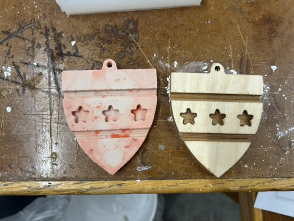
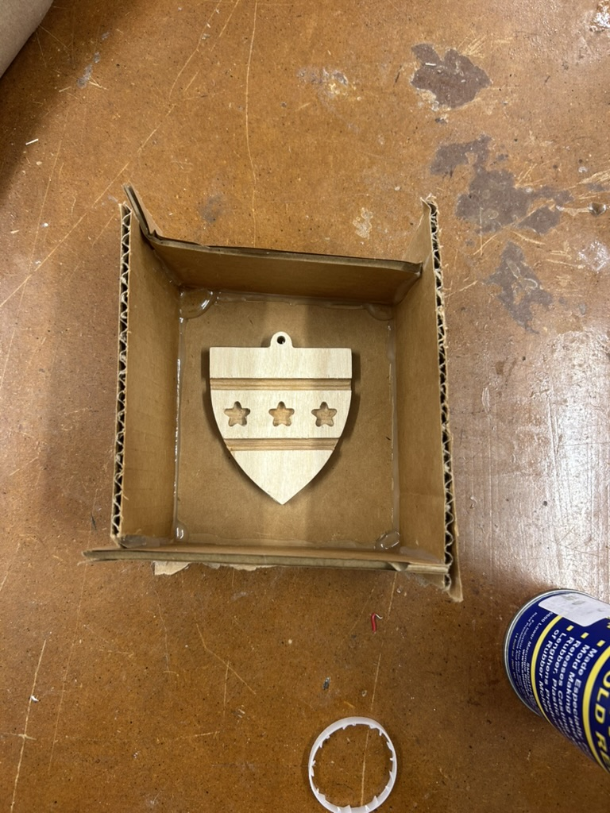
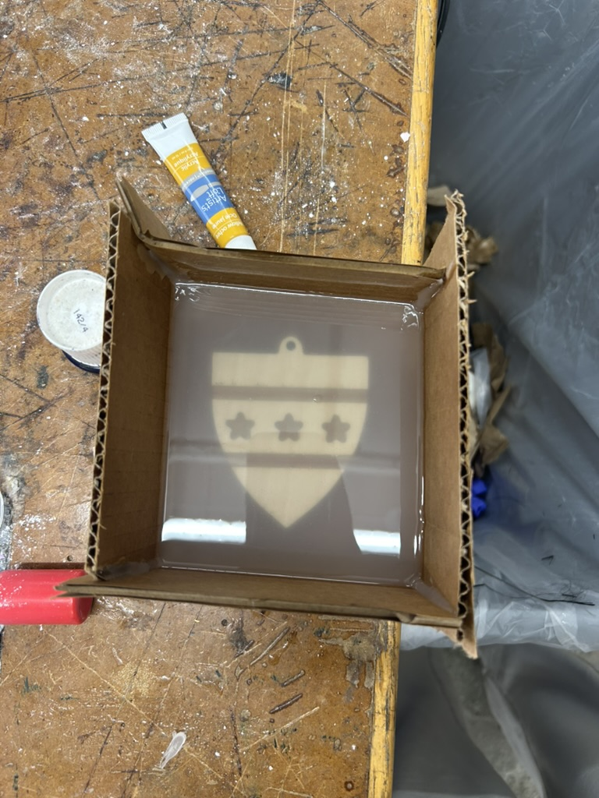

<div class="textcontainer">
<p class="margin"> </p>
<h3>Week 8: CNC Milling, Molding & Casting</h3>
<p></p></img>
<p class="margin"> </p>
<h4>The Assignment</h4>
<p>The goal for this week was to bridge the gap between digital fabrication and manual post-processing. I was tasked with CNC milling a design and then using that "master" to create a mold for casting. I decided to pay homage to the BEST HOUSE by creating a <b>Kirkland House Shield</b>.</p>
<p class="margin"> </p>
<h4>Design & CAM Process</h4>
<p>I started by designing a 2D vector of the Kirkland shield in <b>Fusion 360</b>. My original vision was to make a small, detailed keychain, but I quickly realized a technical limitation: the CNC endmill diameter. I wasn't sure how to change it quite yet and didn't want to bother the already busy teaching team, so I decided to opt for some bigger shapes and thicker lines to create a cute, large shield instead of the more detailed precise one that I imagined (better for 3D printing, as I learned).</p>
<p>I moved the design into <b>Aspire</b> to set up the toolpaths (pockets and outlines) and then sent the job to the <b>ShopBot</b>.</p>
<p class="margin"> </p>
<h4>Molding: Creating the Negative</h4>
<p>Once the wooden master was milled, I sanded it down to remove the "steps" left by the CNC bit. I then prepared a silicone mixture to create the flexible mold.</p>
<p><b>Process:</b>
<ol>
<li>Placed the wooden shield in a custom-sized container.</li>
<li>Mixed the Part A and Part B silicone thoroughly to avoid soft spots.</li>
<li>Poured the silicone over the shield and let it cure for several hours.</li>
<li>Carefully "popped" the wooden master out, leaving a perfect negative cavity.</li>
</ol>
<p></p></img>
<p class="margin"> </p>
<h4>Casting: The Final Product</h4>
<p>For the final cast, I used <b>plaster</b> mixed with a small amount of red paint to give it a signature Kirkland color (wasn't quite the right shade...but we work with what we got). This was the most stressful part of the build! My first batch of plaster was too watery and started separating, so I had to quickly pivot and mix a second batch.</p>
<p>Because I didn't have a single container large enough for the full volume, I had to mix in two smaller batches. This led to a slightly uneven texture, but it added a "stone-like" rustic feel to the shield that I actually quite like.</p>
<p></p>
<p class="margin"> </p>
<h4>Reflections & Learning</h4>
<p>This week was a huge learning curve. I was initially very nervous about the ShopBot because I missed the 1-on-1 training during section, but a huge thanks to <b>Tolu and Bobby</b> for helping me navigate the software and machine setup! I also just loved making molds and casts--I feel like it has the most tangible post-PS70 applications for people since it's much easier to get your hands on this stuff than a laser cutter, so hopefully this inspires me to get more crafty in my postgrad life! </p>
<p><b>What I’d do differently:</b>
<ul>
<li>Use a 1/16" or even 1/32" endmill if I want to revisit the keychain idea.</li>
<li>Find a larger mixing vessel for the plaster to ensure a perfectly smooth, single-batch pour.</li>
<li>Experiment with resin casting for a more durable, polished finish.</li>
</ul>
<p class="margin"> </p>
<div class="flexrow">
</div>
</div>